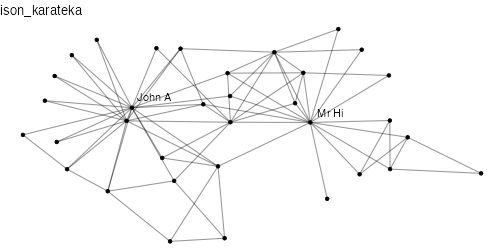

The network was observed in a university Karate club in 1977.
The network describes association patterns among 34 members
and maps out allegiance patterns between members and either Mr. Hi,
the instructor, or the John A. the club president
after an argument about hiking the price for lessons.
The allegiance of each node is listed in the obc argument
which takes the value 1 if the individual sided with Mr. Hi after the fight
and 2 if the individual sided with John A.

data(ison_karateka)#> IGRAPH a87bb9f UN-- 34 78 --
#> + attr: name (v/c), obc (v/n)
#> + edges from a87bb9f (vertex names):
#> [1] Mr Hi-- Mr Hi-- Mr Hi-- Mr Hi-- Mr Hi-- Mr Hi-- Mr Hi-- Mr Hi-- Mr Hi--
#> [10] Mr Hi-- Mr Hi-- Mr Hi-- Mr Hi-- Mr Hi-- Mr Hi-- Mr Hi-- -- --
#> [19] -- -- -- -- -- -- -- -- --
#> [28] -- -- -- -- -- -- -- -- --
#> [37] -- -- -- -- -- -- --
#> + ... omitted several edgesZachary, Wayne W. 1977. “An Information Flow Model for Conflict and Fission in Small Groups.” Journal of Anthropological Research 33(4):452–73. doi:10.1086/jar.33.4.3629752 .